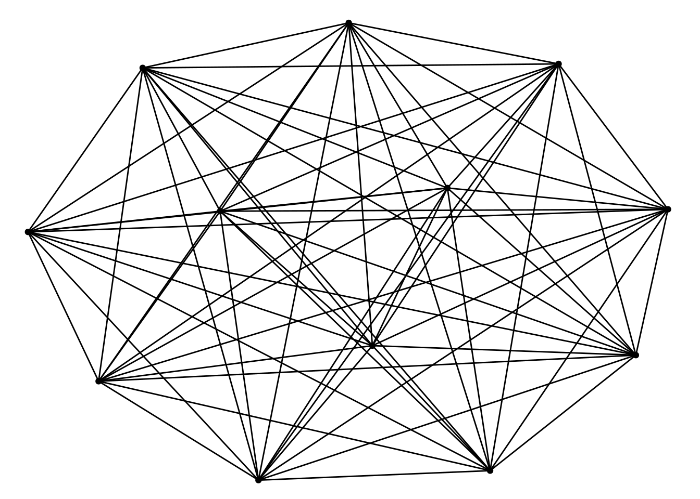
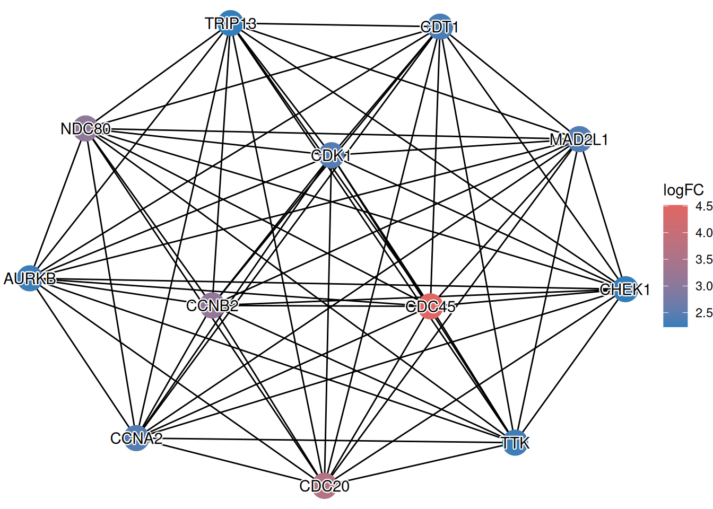

library(clusterProfiler)
library(ggtangle)ggtangle v0.1.2.001 Learn more at https://yulab-smu.top/library(ggplot2)
genes <- c("TP53", "BRCA1", "BRCA2", "S100A6")
g <- getPPI(genes, taxID="9606")clusterProfiler provides the getPPI() function to retrieve Protein-Protein Interaction (PPI) information from the STRING database. This allows users to explore the functional modules and interactions among genes of interest or genes enriched in specific pathways.
To visualize these networks, we recommend using the ggtangle package, which provides a grammar of graphics for networks, allowing for flexible and aesthetically pleasing visualizations. It is worth noting that network visualization functions in enrichplot, such as cnetplot and emapplot, are implemented based on ggtangle.
You can retrieve the PPI network for a specific list of genes using getPPI(). You need to specify the taxonomy ID (e.g., 9606 for human).
library(clusterProfiler)
library(ggtangle)ggtangle v0.1.2.001 Learn more at https://yulab-smu.top/library(ggplot2)
genes <- c("TP53", "BRCA1", "BRCA2", "S100A6")
g <- getPPI(genes, taxID="9606")A more common scenario is to explore the interactions among genes enriched in a specific pathway. getPPI() works seamlessly with enrichment result objects (e.g., from enrichKEGG).
data(geneList, package="DOSE")
de <- names(geneList)[1:100]
x <- enrichKEGG(de)Reading KEGG annotation online: "https://rest.kegg.jp/link/hsa/pathway"...Reading KEGG annotation online: "https://rest.kegg.jp/list/pathway/hsa"...y <- setReadable(x, 'org.Hs.eg.db', 'ENTREZID')
# Get PPI for the first pathway
g <- getPPI(y, 1)You can also specify the pathway ID directly or retrieve PPIs for multiple pathways.
# Get PPI for a specific pathway ID
g2 <- getPPI(y, "hsa04110")
# Get PPI for the top 3 pathways
g3 <- getPPI(y, 1:3)Sometimes it is useful to include neighbors of the query genes to see the broader context. You can use the add_nodes parameter.
# Add 10 neighbor nodes
g_extended <- getPPI(y, 1, add_nodes = 10)Instead of using the default plot() method, ggtangle allows us to visualize the network using ggplot2 syntax. This offers greater flexibility in customizing the appearance of nodes and edges.
# Basic visualization
library(ggtangle)
p <- ggplot(g) + geom_edge() + geom_point()
p
One of the powerful features of ggtangle is the ability to map external data, such as fold changes, onto the network. This helps in understanding the expression patterns within the interaction network.
We can create a data frame containing the fold change information and attach it to the plot using the %<+% operator. This operator is originally introduced in the ggtree package (Yu et al. 2018) for attaching data to a phylogenetic tree object.
# Prepare fold change data
# geneList contains log2FC values, names are Entrez IDs
# Since 'y' was setReadable, the nodes in 'g' are gene symbols.
# We need to match the IDs.
library(org.Hs.eg.db)
fc <- geneList
names(fc) <- mapIds(org.Hs.eg.db, keys=names(fc), column="SYMBOL", keytype="ENTREZID")'select()' returned 1:1 mapping between keys and columns# Create a data frame for mapping
# 'name' column should match the node names in the network
d <- data.frame(name = names(fc), logFC = fc)
# Map data to the plot
ggplot(g) %<+% d +
geom_edge() +
geom_point(aes(color = logFC), size = 8) +
shadowtext::geom_shadowtext(aes(label = name), color="black", bg.color="white") +
#scale_color_gradient2(low = "blue", mid = "white", high = "red") +
enrichplot::set_enrichplot_color(reverse=F) +
theme_void()
This visualization allows you to simultaneously see the interaction structure (from STRING) and the functional state (up/down-regulation) of the genes, providing a more comprehensive view of the biological context.